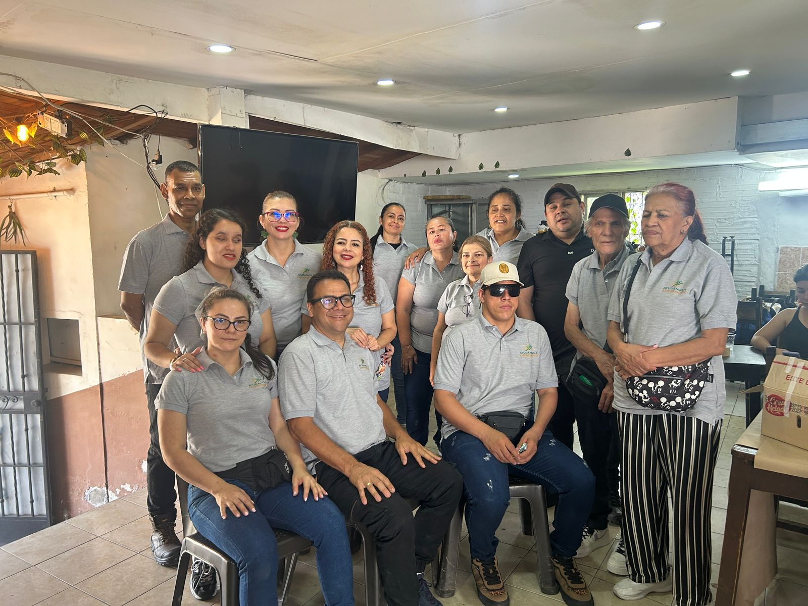

Unidades productivas inclusivas estructuradas como economías emergentes. Al finalizar 24 meses, cada núcleo es entregado a sus beneficiarios con plena autonomía administrativa y económica.
Toca una región en el mapa interactivo para verla en el territorio real.
Un Núcleo Inclusivo de Desarrollo Social y Tecnológico es una unidad productiva comunitaria donde 50 familias se forman, trabajan y emprenden juntas dentro de economías emergentes de alto impacto. A los 24 meses, el núcleo se entrega a sus beneficiarios con plena autonomía.

Diagnóstico psicológico, social y funcional de cada familia para diseñar la ruta pertinente.
Bachillerato por ciclos, técnicos laborales y carreras profesionales con ajustes razonables (Ley 3011).
Contratos de aprendizaje de dos años con ingresos dignos dentro de los modelos de negocio del núcleo.
El núcleo opera como economía solidaria: la riqueza generada permanece en la comunidad.
Drones, conectividad satelital y DeepTech accesible al servicio del territorio.
Riesgo comercial cero: la producción se vende al 100 % mediante contratos off-take de 10, 15 y 20 años con corporaciones internacionales. Así, cada familia trabaja con un mercado asegurado desde el primer día.
| Galpones por núcleo | 41 |
|---|---|
| Aves ponedoras por galpón | 4.500 |
| Ventas aseguradas | Contratos de 10, 15 y 20 años |
| Autonomía de la comunidad | Desde el mes 24 |
Tu donación o la vinculación de tu organización aceleran la meta de 650 núcleos.